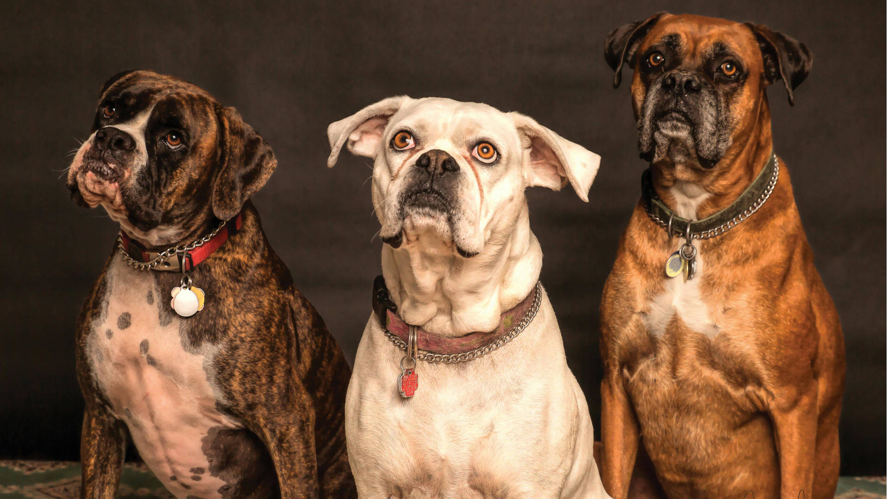

Introducción
En esta práctica, trabajarás con imágenes optimizadas y un logotipo SVG. Completa la investigación de licencias y prepara tus recursos.
Resumen licencias
Una licencia consiste en una autorizacion que concede el autor de uan obra para el uso de la misma, esta se puede otorgar a una persona en concreto, o a cualquiera que cumpla con los requicitos de la licencia
Las licencia de copyright se palican de forma automatica sobre todo lo que creas, y prohibe cualquier uso del contenido, nadie puede copiar, usar, modificar ni distribuir la obra sin el permiso del autor. Por otro lado, las licencias Creative Commons, son licencias que permiten que otras personas usen la obra si cumplen ciertas condiciones que se combinan ssegun la licencia:
- CC BY: Puedes hacer lo que quieras con la obra siempre que te den credito por la autoria.
- CC BY-SA: Lo mismo que la aunterior pero si alguien modifica la obra original tiene quieras publicarla con el mismo tipo de licencia.
- CC BY-NC: Tienes que ofrecer reconocimiento por la autoria y no la puedes usar para fines comerciales.
- CC BY-ND: Ofrecer reconocimiento y no puedes modificar el contenido original.
- CC0: renuncia completa de los derechos, tambien conocida como "Dominio publico"
Bancos de recursos libres
Bancos de imagenes
-
Pixabay
Licencia: Pixabay License
Permite: uso comercial, modificaciones. -
Unsplash
Licencia: Unsplash License
Permite: uso comercial, edicion, pero no permite vender fotos sin editar -
Pexels
Licencia: Pexels License
Permite: uso comercial y modificaciones.
-
Pixabay
Bancos de iconos
-
Flaticon
Licencia: Free License con atribucion obligatoria.
Permite: uso personal y comercial solo si se atribuye. -
Material Icons
Licencia: Apache 2.0
Permite: uso comercial, modificaciones, redistribucion. -
Font Awesome Free
Licencia: CC BY 4.0
Permite: uso comercial y modificaciones.
-
Flaticon
Bancos de audio
-
FreeSound
Licencias: CC BY, CC BY-SA, CC0 (segun el sonido).
-
Free Music Archive
Licencias: CC BY, CC BY-SA, CC BY-NC... (segun el autor).
Permite: uso comercial, edicion, pero no permite vender fotos sin editar -
YouTube Audio Library
Licencia: Estandar de YouTube y CC BY
Permite: Mantener los derechos de autor, ver el video e inseralo en una pagina web, pero no editarlo ni descargarlo.
-
FreeSound
Comparacion entre JPG, PNG, SVG y WebP
| Formato | Peso medio | Soporte de transparencia | Escalabilidad | Casos de uso recomendados |
|---|---|---|---|---|
| JPG | Bajo / medio | No | No escalable | Fotografias, imagenes con muchos colores, compresion ligera |
| PNG | Medio / alto | Si | No escalable | Logotipos simples, graficos con transparencia, capturas de pantalla |
| SVG | Muy bajo | Si | Escalable sin perdida | Iconos, logotipos, ilustraciones, graficos vectoriales |
| WebP | Muy bajo / bajo | Si | No escalable | Web moderna, imagenes optimizadas, fotos y graficos con o sin transparencia |
Tabla comparativa img optimizadas
Estoy teniendo en cuenta la img grande (1920 x 1080) exportada al 70%
| Nombre de archivo | Dimensiones antes | Dimensiones después (70%) | Peso antes | Peso después (70%) |
|---|---|---|---|---|
| img1.png | 3653 x 1994 px | 1920 x 1080 px | 20,8 MB | 249 KB |
| img2.png | 5184 x 3888 px | 1920 x 1080 px | 14,4 KB | 215 KB |
| img3.png | 5400 x 3600 px | 1920 x 1080 px | 16,5 MB | 264 KB |
Logo
Carlos Gabriel Garcia Guzman (CGGG = CG3)
Galería de imágenes

Entre mas pesada es la imagen, mas tarda en cargar desde el servidor, y las que son muy pesadas a veces ni cargan, por lo que es mejor redimencionar las imagenes al tamaño maximo que se van a mostrar, si la imagen tiene width="300px" no es nesesario hacerla mas grande que eso porque solo lograras que la pagina vaya mas lenta. Tambien depende de factores como la velocidad de nuestra red, pero en nuestro servidor web imagen de 1MB ya tarda un poco en cargar.
Herramientas y referencia web
- Herramientas
- Edicion de imagenes: GIMP 3
- Creacion de imagenes vectoriales: Inkscape
- Referencias Web
- https://www.wipo.int/es/web/copyright
- https://es.wikipedia.org/wiki/Derecho_de_autor
- https://es.wikipedia.org/wiki/Copyright
- https://creativecommons.org/licenses/
- Pagina Web propias de cada banco de recursos